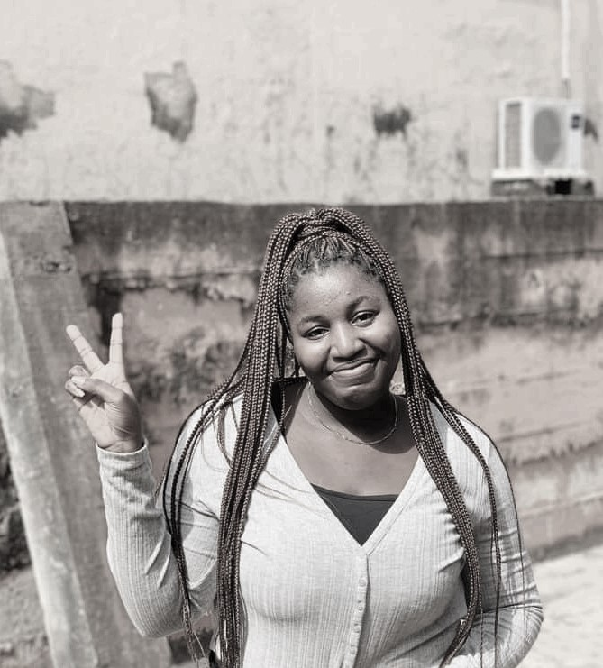

Personal details
Name:
Ugwu Nnenna Stella
Location:
Rivers State, Nigeria.
Phone number:
+2349065561827
Email address:
nugwu5@gmail.com
stellaugwu011@gmail.com
Languages:
English
Igbo
|
Ugwu Nnenna Stella
Profile:
Currently undergoing my B.sc in computer science, aiming to work in other to improve my capacity.Strong skills in coding and calculations coupled with a creative mindset.
Objectives:
* Proficiency in numerous programming languages and a reasonable amount of experience in software development.
* To find a responsible job position with an evaluative organization where my expertise area and work experience will have important appliance and exploitation of my opportunity for company development.
Education:
B.sc in computer science(in view)
Godfrey Okoye University 2019-present
Pacesetters missionary college [Secondary education] 2014-2017
Oasis global academy [Secondary education]2011-2014
Row International Christian School[Primary education]2011
Training:
* Free code camp
* Upsilion academy
* New dev fest
* Tech creek
Skill Set:
* Front-end Development
* Excel
* Word
* Critical thinking
* Time management
* Flexibility
* Power point
* Java
Certificates:
* Research and Ethics(2021)
* Students training entreprenurship program[STEP] (2021)
* Leadership skill and good character(2020)
Prospective projects:
* Hoping to Host a restuarant website where people can order food and have it quickly delivered to them and food vendors can also sign up.
* Hoping to design a small javascript game, probably a working chess game.
|